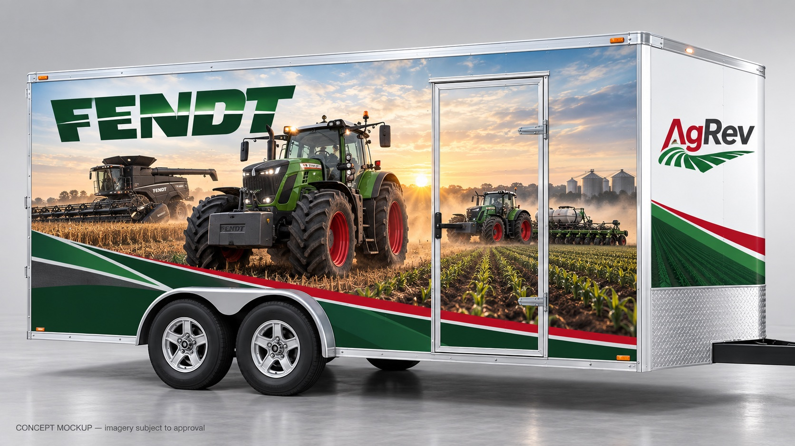
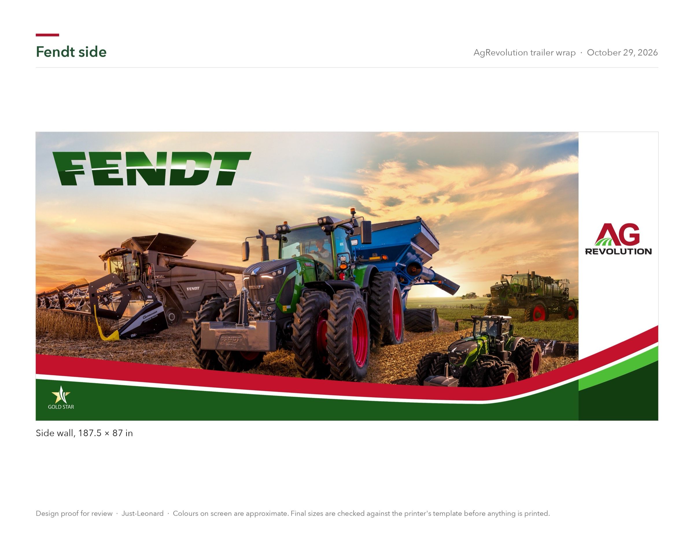
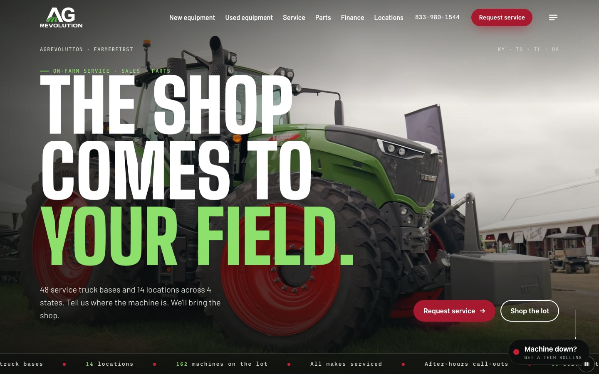

Emmy-award winning producer and creative director. I own the work from the first idea to the file that ships, and I use AI where it adds real value: to win the direction early, and to pressure-test the work before a client ever sees it.

AI concept
Final proof · 2026-10-29Generated renders won the client's direction in a week. Then the wrap was rebuilt for print with the client's own photography, official logos and live type, and the generator's mistakes were caught before anything reached a printer.
Read the case study →
Prototype v4499 pages crawled, 353 dealer sites checked, three hostile reviews. Phone speed score 54 to 94.
Read the case study →A horror game in preproduction. From generated concept to a running Unreal Engine 5 test room, with its core reality-shift mechanic working and every frame labelled for what it is.
Read the case study →A product-design concept for a dealer's used-equipment marketplace: a clickable concept and a pilot plan. OneYard is a working name.
One search door to every project I run, with specialist agents that build, review and fact-check work before anyone sees it.